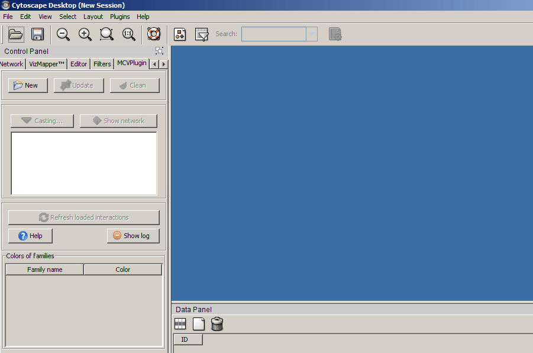
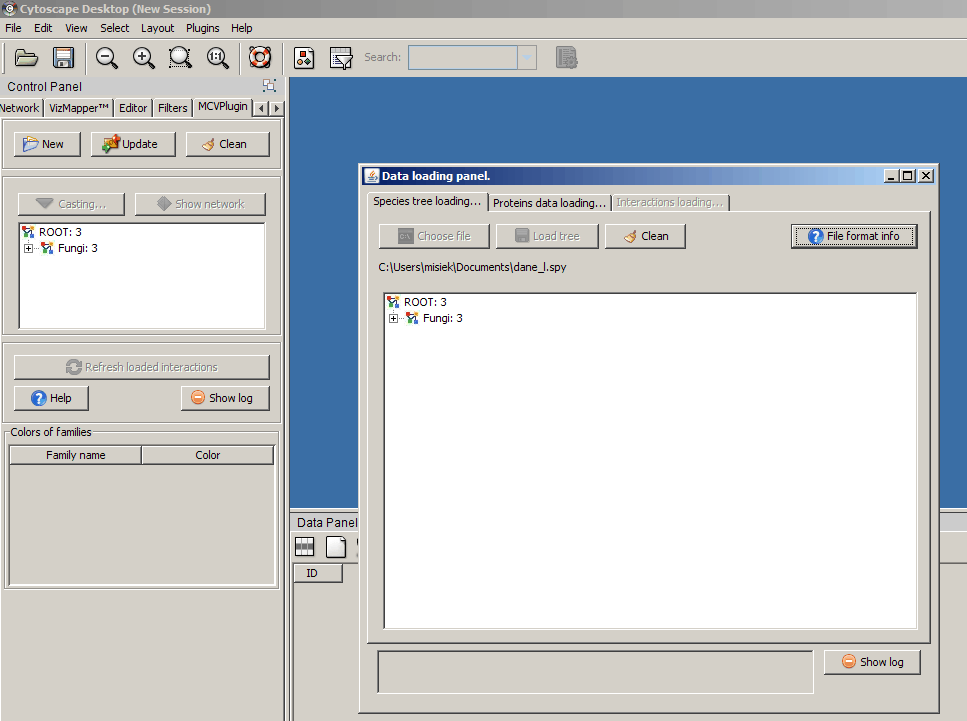
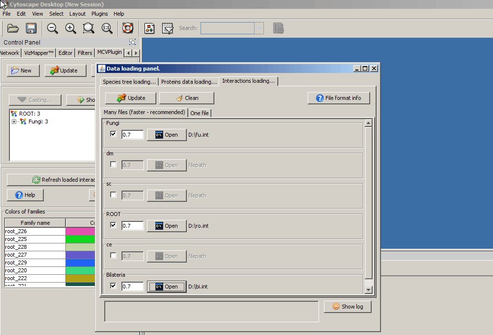
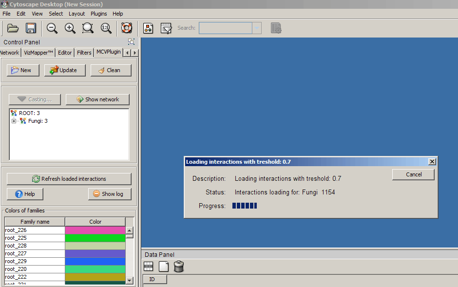
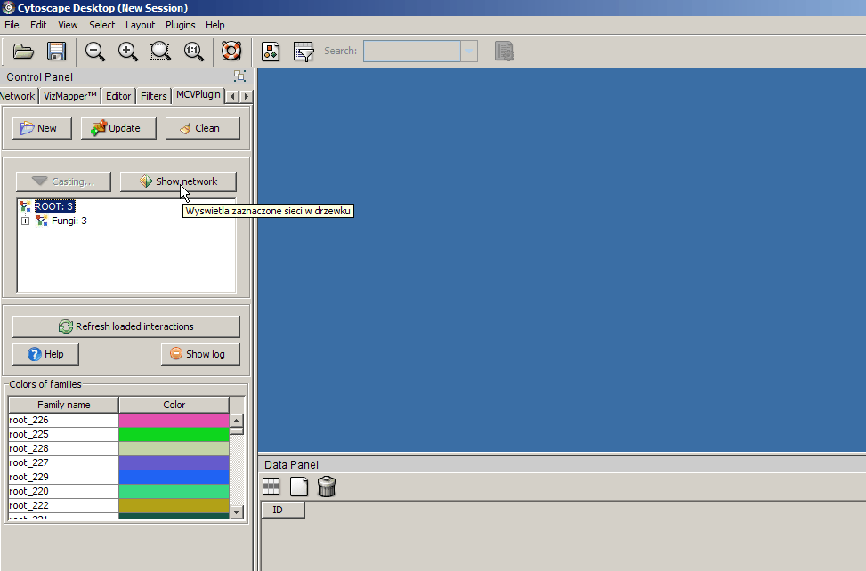
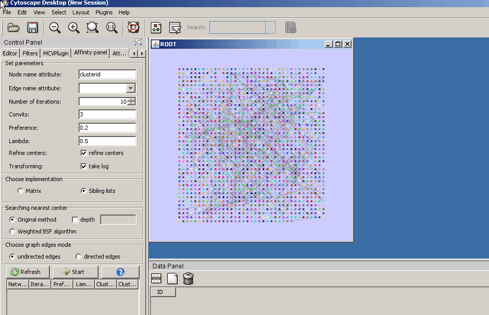
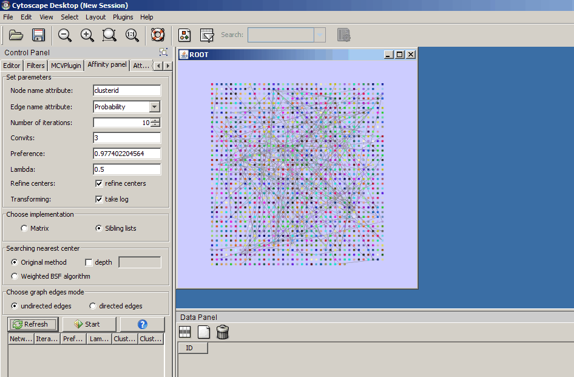

-
Download my example data in required formats from this page:
https://students.mimuw.edu.pl/~mw219725/mcvdata/

-
Open loading panel by "New" button click.

-
Choose species tree data file, and click "Load" to load data.

-
After it you should see loaded species tree.

-
Change tab to "Proteins data loading" and do the same for proteins
data.

-
Change tab to "Interactions loading". Select species, and choose file
with interactions data for every selected species.

-
Click "Update" button, now your interactions data are loading.
After loading click "Close" to close loading panel.

-
Select "Fungi" species on species tree, and click "Show network" button.
Fungi protein-protein network will be shown.

-
Change tab to "Affinity panel". Click "Refresh", and after then click
"Start" button to cluster Fungi network.

-
You will see that screen.

-
Now you should layouting network by choosing one of Cytoscape Layouts.
Select Cytoscape Layouts -> Group Attributes Layout -> clusterid.

-
Select first cluster in left top corner.

-
Select: sc, dm, ce from species tree and click "Casting".

-